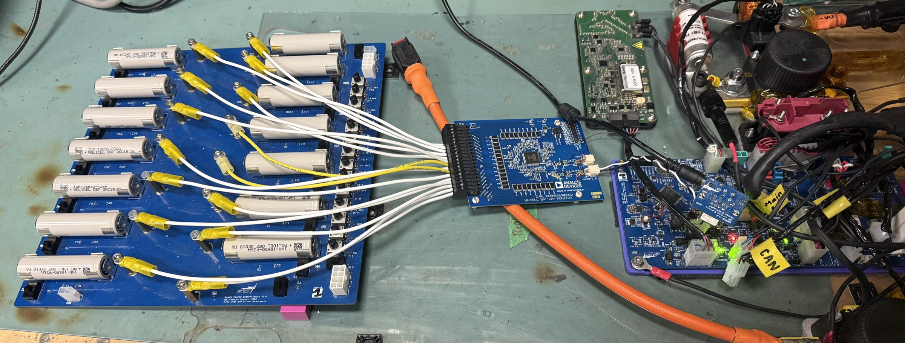

ADBMS Driver Development
This driver runs the Analog Devices ADBMS6830B battery-monitoring ICs that watch over UBC Formula Electric’s 600 V pack. The main BMS board — an STM32H7 running FreeRTOS — talks to ten segments wired as an isoSPI daisy chain, with every transaction PEC-validated. Each segment monitors 14 cells and 14 thermistors; on top of reading them, the driver runs passive cell balancing and raises safety alerts when something drifts out of range. The full pack state is then published to the rest of the car over CAN.
Loading the 3D board…
How it works
The driver is split into two layers: a low-level io/adbms layer that speaks the ADBMS command protocol directly, and an app/segments layer that turns raw register reads into pack-level quantities and behaviour.
- isoSPI daisy chain. The host STM32H7 talks SPI to a transceiver that converts to isoSPI — a differential, transformer-isolated link that hops cleanly across the high-voltage segments. Every transaction is broadcast down the chain and shifted back up, so all ten segments are addressed in a single command.
- PEC-validated transactions. Each command and data block carries a 15-bit packet error code. The io layer generates the PEC on write and checks it on read, so any corrupted frame on the noisy HV bus is caught and retried rather than silently trusted.
- Cell & thermistor acquisition. The driver kicks off the ADBMS’s on-chip ADC conversions, waits the part’s conversion time, then reads back the cell-voltage and auxiliary (GPIO/thermistor) register groups and converts the raw counts to volts and degrees Celsius.
- Open-wire detection. By toggling the ADBMS pull-up/pull-down current sources and comparing readings, the driver detects broken connections to any cell tap or thermistor — a critical safety check on a 600 V pack.
- Passive balancing. Per-cell discharge switches are driven on a settle/balance timer to bleed down the highest cells and keep the segment in balance.
- Thread-safe by design. Acquisition runs in asynchronous FreeRTOS tasks; the shared SPI bus and the latest pack values are guarded by semaphores/mutexes so the broadcast, control, and safety tasks never tear a read. The SPI transfers themselves run over DMA, so the CPU isn’t blocked shuttling bytes through each chain transaction.
Explore the board
The complete board design — schematic, PCB layout, 3D, and bill of materials — in one interactive viewer. Powered by Altium 365.
On the bench
Bringing the driver up against real hardware — a pseudo-segment harness of live 18650 cells wired into the ADBMS monitor, used to validate isoSPI links and acquisition before the firmware ever sees a full pack.

What I did
I work on this driver as part of the BMS firmware team, owning chunks of both layers. On the io side that meant getting the isoSPI transactions and PEC generation/checking solid so the chain reads reliably, and wiring up the cell-voltage, auxiliary, and config register paths. On the app side it meant turning those raw reads into the min/max/average cell statistics, health bitmaps, balancing decisions, and alert thresholds that the rest of the car depends on, and broadcasting all of it over CAN.
A lot of the real work was bring-up and debugging on hardware. I tested and debugged 15+ boards on a pseudo-segment harness to validate the isoSPI links between the BMS and the module boards, chasing down PEC failures, marginal connections, and conversion-timing issues across the daisy chain. Getting the open-wire checks to reliably distinguish a genuinely broken tap from normal measurement noise on a live HV bus was one of the more satisfying parts to get right.
Browse the source
It’s all open source — this is the real driver code, straight from our team’s firmware repo. Have a look around.